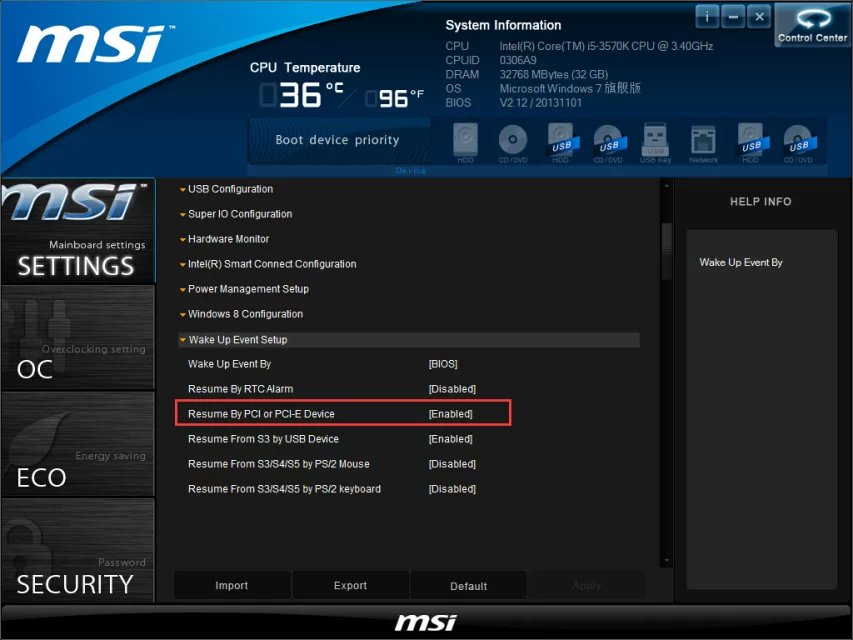
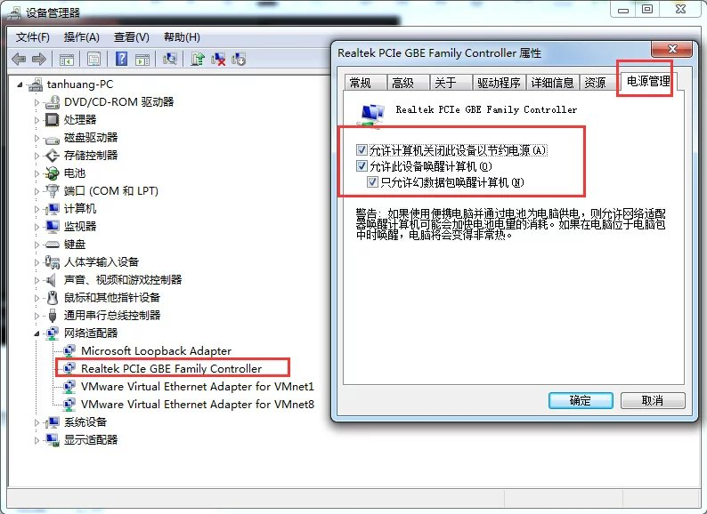
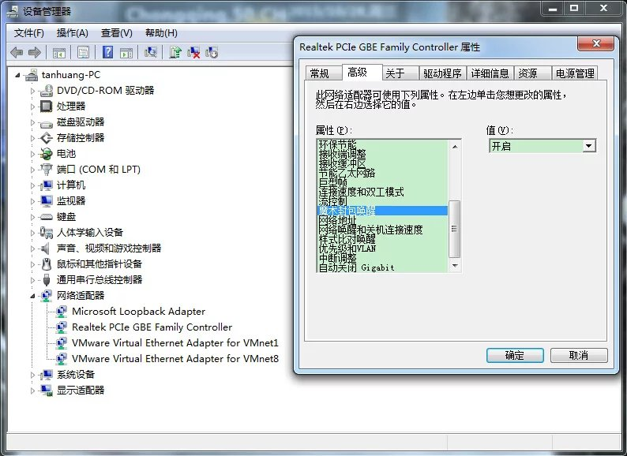

分为对局域网内计算机进行唤醒和通过互联网唤醒计算机
通过互联网唤醒计算机, 实际上就是多一步在互联网出口设备上要做端口映射,以及交换机/路由器上可能会需要进行IP与MAC的绑定问题.
分别需要对BIOS，操作系统，以及路由器进行设置。
微星BIOS设置（近几年各大厂商都普及了图形化界面，以微星Z77A-G41为例），不同厂商界面不同，但基本大同小异。
关于BIOS和操作系统的设定，youtube的这哥们给出了答案
https://www.youtube.com/watch?v=2CGFvLgye3g
BIOS方面，只要有wake on PCI-E都是可以的，按早年间的一些文章介绍，还以为一定要wake on lan
实际上只需要wake on PCI-E及禁用EuP 2013，如下图

接下来对操作系统进行设定
在设备管理器中找到接路由器的物理网卡，先设置电源管理

接下来设置“高级”选项卡，有四项需要确认
“魔术封包唤醒” ====> 需确认处于打开状态
“关机 网络唤醒” ====> 需确认处于打开状态
“环保节能” ====> 需确认处于关闭状态
“节能乙太网路” ====> 需确认处于关闭状态
youtube哥们用的英文操作系统

对操作系统的设定是为了避免关闭Windows时，彻底关闭了网卡，导致无法接受唤醒信号。
最后对路由器进行设定——此时短时间已能进行唤醒，几分钟后会失效
原因这两个帖子说到了
http://www.gebi1.com/forum.php?mod=viewthread&action=printable&tid=240599
http://blog.ashchan.com/archive/2009/08/13/wake-on-lan-over-internet/
假如是交换机（比如需要唤醒机房局域网内的某台服务器），在不断电的情况下，此时已可以完成，因为网卡MAC的地址还在。家用路由器，非绑定的MAC-IP地址由于MAC地址时效问题，会进行清理，所以关机后几分钟就无法唤醒了。因此在路由器做一个MAC与IP的绑定，为的是始终保留此MAC的IP，便于路由器接受到唤醒信号知道该传给哪个端口。
另外路由器上需建立端口转发（映射关系），唤醒信号（魔术封包）使用UDP的9端口（也有些用7，取决于软件） ，家用路由器也许不分TCP和UDP。
最后，智能手机上寻找wol 或 wake on lan 关键字的软件来安装，大同小异，主要是协议。
再一个，动态的公网IP，就借助一下动态域名解析软件来解决了，在不断线重拨的情况下，IP不会发生变化，绝大多数时候都能满足需求了。
如果动态解析确实无法满足，向日葵的开机棒几年前也搞起来了。
PS：
经过反复测试， 绑定MAC地址可以解决路由器的MAC地址失效问题，以实现唤醒。但前提务必是由操作系统关闭计算机，如电源键关机等会导致网卡处于休眠状态（即使看见指示灯闪烁），也会无法唤醒计算机。